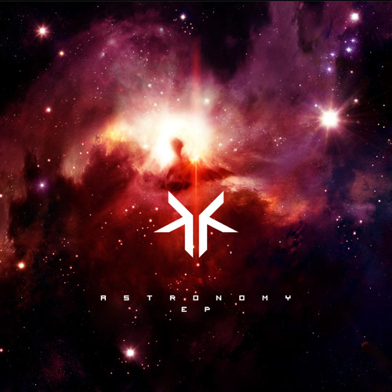

Experiencing since Elementary School ~ 2013
My journey with electronic music was kick started by a Buzzfeed video from the early 2010s. I'm sure my teenager brain was eating up the video content, but what really kept me watching was the sick, banging, trippy soundtrack. The first electronic song that stuck with me was "Lunaris" by Kynaze.
You have the snare beat with the slightest bit of reverb that tugs at your heart each time it hits, and so many layers upon layers that all just fit so perfectly together. The song is genuinely like a rollercoaster slowly building you up, then letting you rest before taking you on a Mario Kart rainbow road, galactic audio trip. The song takes the listener epic adventure through a fantasy forest with the soft glow of fireflies dotting your path, then slowly an glistening door to the universe reveals itself. Suddenly, you're flying through space, multitudes of stars zip past you, you see supernova remnants from stars that exploded centuries ago, and you feel weightless as you soak in the experiene that is "Lunaris".
I remember walking to middle school listening "Lunaris". In particular, one morning of 8th grade it was like 7 am during autumn. So my path to school was solely illuminated by the dim street lights that fizzled out into the blue tinted darkness. I felt at peace pacing through the crisp yet dewy fallen leaves feeling the trickles of Seattle rain as Kynaze accompanied me through the serene promenade to school.
"Lunaris" truly spoiled me, it is such a wonderful song to this day. It introduced me to the world of dubstep and EDM, and my life has never been the same. I don't know about others, but music changes my mood, music is like a friend, and it inspires me to seek out my passions in life. I think my relationship with music genuinely has defined my personality, and how I interact with people in my life. For EDM and dubstep, I feel powerful, and I feel like I can take on anything that comes my way.
After Kynaze, I listened to everything from Tobu, Nitro Fun, Vicetone, Zedd, Audien, Approaching Nirvana and more. As a young middle school, my neurons were having daily parties from intaking pure dopamine in the form of sharp beats paired with upbeat electric melodies.
Unfortunately, I had few friends in elementary, middle, and even high school that shared my love for dubstep and EDM. I even struggle to think of anyone in my life who knows that knows how much EDM and dubstep besides my friend Zack Sussman. As a tween and teen, I remember trying to chain my Youtube recommended videos to hide my EDM and dubstep preferences as well as going through my soundcloud and unliking all my songs. Now, when I try to find my old songs to reminisce, they're all gone. And that makes me so sad. I wish I told old me that it was perfectly fine to enjoy EDM and dubstep, and there was nothing to be ashamed about.
This is a whole other conversation, but I'm starting to fully enjoy my past hobbies and interests like anime, dubstep, and EDM. My philosophy is that I will not hold back from interests that actively contribute to my happiness since I'm not hurting anybody or myself. There is strictly a positive expected value for me listening to the music I want to.
And what if someone judges me for my music taste? That is ok. Now I know I probably won't prefer to be around them, and I can just stick to the people who I can share my musical taste with!
I remember in freshman year of college I talked to Zack about EDM a couple times here and there, and we've started talking about it more as I slowly rediscover all the songs I used to enjoy so much. I have a playlist on soundcloud and spotify to keep track of the rediscovered songs.
This is the playlist so far, the beginning is more modern but the later ones are the OG!